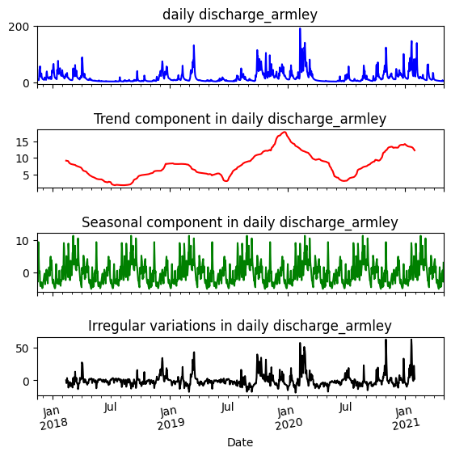
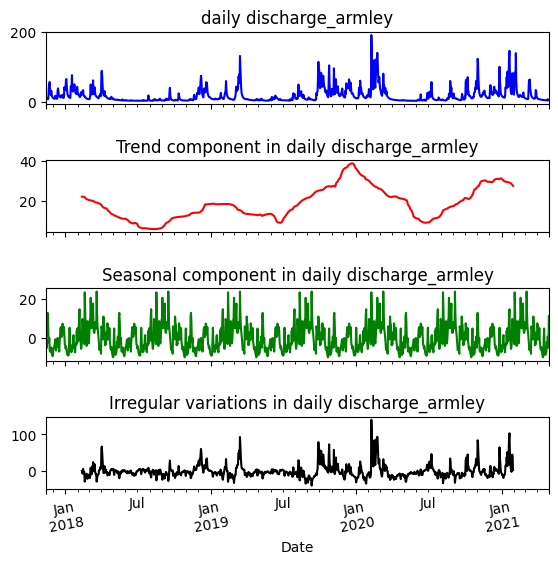
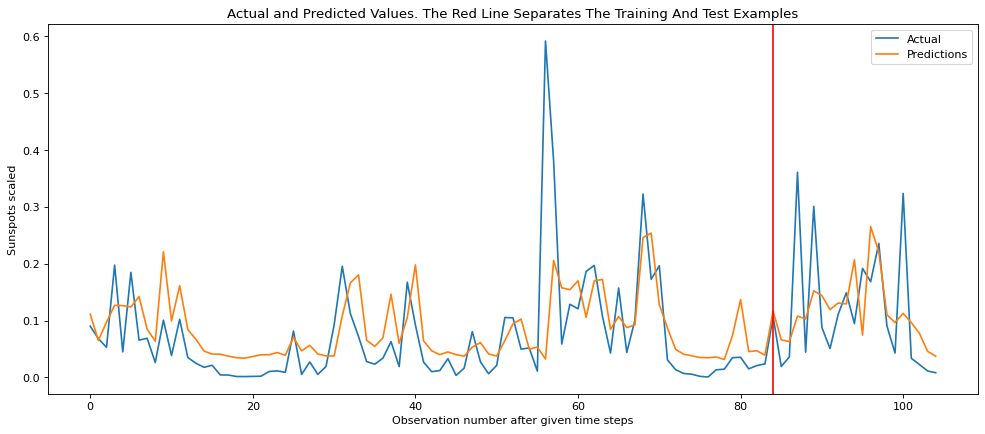

ANÁLISIS EXPLORATORIO DE DATOS#
Conceptualización#
El Air River, es un complejo fluvial que a lo largo de la historia Inglesa, ha sido importante para la economía local, sirviendo como vía de transporte para mercancías durante la Revolución Industrial. El río estuvo relacionado con el desarrollo de la industria textil en la región de Yorkshire y su biodiversidad es conocida por albergar variedades de pecesasí como aves y otros animales que dependen del río. Comprende una basta extensión de aguas que fluye a través de Yorkshire, en el norte de Inglaterra. Se origina en las Colinas de Pennine cerca de Malham, y fluye en dirección este hasta unirse al Ouse River cerca de Goole.
En la imagen a continuación se detalla una sección del recorrido (36 km) que realiza el río entre las ciudades objetos de éste estudio (Kildwick y Armley).
from IPython.display import Image, display
# Ruta relativa a la imagen dentro de tu Jupyter Book
image_path = "C:/Users/FBA/OneDrive - Acesco/0. Personales/2. Profesional/20240416 - Maestria en Analítica de Datos/20240919 Series de Tiempo/jbook_ST20240919/docs/Air river.png"
# Mostrar la imagen
display(Image(filename=image_path))

Introducción#
El estudio del caudal de un rió, permite conocer la capacidad de movilizar un volumen de agua en una unidad de tiempo determinada. Con el fin de planificar desarrollos tenológicos, logísitcos y sociales, que van desde la implementación de sistema de extracción de energías renovables (Hidroelectricas), la navegabilidad marítima comercial o lúdica, y el abastecimiento de agua de los localidades aledañas.
Pronósticar el caudal del Air River, en el inmediato o corto plazo es indispensable para implementar estrategias abastecimiento de auga de las empresas encargadas del tratamiento y potabilización, prevenir periodos de sequías o peligros potenciales de desbordamientos, así como las rutas seguras que el comercio local puede seguir en la navegabilidad del río.
Sin emnbargo, las multiples variables que impactan el caudal de un río, hacen que pronósticar su valor futuro sea una reto complejo de abordar. Razón por lo cual, en el presente estudio se omitirán el impacto individual de dichas variables, y se concentrará en el impacto colectivo de las mismas, utilizando como única variable descrictora el tiempo.
Los datos#
import pandas as pd
# Ruta al archivo .csv
csv_file_path = "C:/Users/FBA/OneDrive - Acesco/0. Personales/2. Profesional/20240416 - Maestria en Analítica de Datos/20240919 Series de Tiempo/Tarea 1/Parte 1/river_aire_discharge_timeseries.csv"
# Lee el archivo .csv en un DataFrame
df = pd.read_csv(csv_file_path)
# Muestra las primeras filas del DataFrame
print(df.head())
Date SF_absolute_humidity SF_relative_humidity \
0 14/11/2017 8.3 86.2
1 15/11/2017 7.6 87.0
2 16/11/2017 6.4 78.8
3 17/11/2017 5.4 77.3
4 18/11/2017 5.6 74.0
SF_mean_air_temperature SF_atmospheric_pressure SF_potential_evaporation \
0 10.4 1013.1 0.4
1 8.8 1016.3 0.4
2 7.7 1014.7 0.6
3 5.6 1019.7 0.6
4 6.5 1013.1 0.7
SF_net_radiation SF_volumetric_water_content SF_soil_temperature \
0 0.8 32.4 6.9
1 1.1 31.3 8.1
2 -2.7 31.8 7.1
3 -2.3 32.5 4.9
4 -2.3 30.4 5.2
SF_wind_speed ... river_level_snaygill river_level_kildwick \
0 2.9 ... 0.417 0.366
1 1.6 ... 0.695 0.496
2 3.2 ... 0.715 0.497
3 2.9 ... 0.631 0.476
4 3.4 ... 0.534 0.430
river_level_kirkstall headingley_precipitation malham_precipitation \
0 1.514 1.4 9.6
1 1.545 0.0 3.8
2 1.544 0.4 1.6
3 1.562 0.0 0.8
4 1.536 0.0 0.0
skipton_snaygill_precipitation farnley_hall_precipitation \
0 0.8 0.8
1 0.8 0.0
2 2.4 0.2
3 0.4 0.0
4 0.0 0.0
embsay_precipitation silsden_precipitation lower_laithe_precipitation
0 6.6 1.2 1.0
1 2.2 1.2 1.4
2 1.6 1.0 2.0
3 0.2 0.4 0.2
4 0.0 0.0 0.2
[5 rows x 24 columns]
Las variables de interés en la base de datos se denominan ‘discharge_kildwick’ y ‘discharge_armley’
Interpretación gráfica#
import pandas as pd
import matplotlib.pyplot as plt
df = pd.read_csv(csv_file_path)
# Convertir la columna de fechas al formato de fecha
df['Date'] = pd.to_datetime(df['Date'], format='%d/%m/%Y')
# Configurar la columna 'Date' como índice
df.set_index('Date', inplace=True)
# Crear una figura y ejes para varias series de tiempo
fig, ax = plt.subplots(figsize=(10, 6))
# Graficar series de tiempo
ax.plot(df.index, df['discharge_kildwick'], label='Caudal en Kildwick/England')
ax.plot(df.index, df['discharge_armley'], label='Caudal en Armley/England')
# Personalizar gráfico
ax.set_title('Series de Tiempo Caudal River Air')
ax.set_xlabel('Fecha')
ax.set_ylabel('Discharge')
ax.legend()
# Mostrar gráfico
plt.xticks(rotation=45)
plt.tight_layout()
plt.show()

Verificación de datos faltantes#
data_us=df[['discharge_kildwick']].copy()
data_us.loc[:,'discharge_armley']=df['discharge_armley']
data_us.set_index(df.index,inplace=True)
data_us.head()
| discharge_kildwick | discharge_armley | |
|---|---|---|
| Date | ||
| 2017-11-14 | 3.69 | 7.43 |
| 2017-11-15 | 4.56 | 9.66 |
| 2017-11-16 | 5.45 | 10.30 |
| 2017-11-17 | 4.19 | 9.69 |
| 2017-11-18 | 3.55 | 8.37 |
data_us.isna().sum()
discharge_kildwick 0
discharge_armley 0
dtype: int64
data_us.isnull().sum()
discharge_kildwick 0
discharge_armley 0
dtype: int64
Validación de la frecuencia muestral#
#frecuencia de datos
data_us.index = pd.to_datetime(data_us.index, format='%Y-%m-%d')
frecuencia = pd.infer_freq(data_us.index)
print("Frecuencia: ", frecuencia)
Frecuencia: D
Análisis preliminar#
En general el caudal de un río dependerá signficativamente de la localidad en donde éste se mida. Sin embargo las fluctuaciones del mismo serán proporcionales en cada zona.
De las interpretaciones preliminales que podemos observar en este tipo de datos de series temporales, es la estacionalidad y movimientos ciclicos de las variables medidas que se repiten con una regularidad, claramente marcada por los periodos de incremento y disminución de la pluviosidad en cada estación. La escaza o nula tendencia existente en los datos, es un comportamiento habitual de las variables que dependen de fenómenos naturales, los cuales crecen o decrecen a ritmos muy bajos solo perceptibles en largos periodos de tiempos con datos de varias décadas o siglos.
Particularmente, los datos observados del Air River donde los bajos caudales concuerdan con las estaciones del Verano y otoño entre los meses de abril a noviembre. Los picos en los caudales corresponden a las estaciones de invierno y primavera, la cual se dá entre los meses de diciembre a marzo en los paises de Reino Unido.
Fuente: https://www.npl.co.uk/resources/q-a/when-do-the-four-seasons-begin
Descomposición de la serie temporal#
import pandas as pd
import numpy as np
from statsmodels.tsa import stattools
from statsmodels.tsa import seasonal
from matplotlib import pyplot as plt
print('Shape of the DataFrame:', data_us.shape)
data_us.head(10)
Shape of the DataFrame: (1264, 2)
| discharge_kildwick | discharge_armley | |
|---|---|---|
| Date | ||
| 2017-11-14 | 3.69 | 7.43 |
| 2017-11-15 | 4.56 | 9.66 |
| 2017-11-16 | 5.45 | 10.30 |
| 2017-11-17 | 4.19 | 9.69 |
| 2017-11-18 | 3.55 | 8.37 |
| 2017-11-19 | 3.18 | 7.89 |
| 2017-11-20 | 10.90 | 17.70 |
| 2017-11-21 | 28.10 | 45.30 |
| 2017-11-22 | 34.80 | 49.30 |
| 2017-11-23 | 33.40 | 57.40 |
print(data_us.columns)
Index(['discharge_kildwick', 'discharge_armley'], dtype='object')
missing = (pd.isnull(data_us['discharge_kildwick']))|(pd.isnull(data_us['discharge_armley']))
print('Number of missing values found:', missing.sum())
data_us = data_us.loc[~missing, :]
Number of missing values found: 0
adf_result = stattools.adfuller(data_us['discharge_kildwick'], autolag='AIC')
print('p-val of the ADF test on irregular variations in employment data:', adf_result[1])
p-val of the ADF test on irregular variations in employment data: 1.4665070963788551e-06
adf_result = stattools.adfuller(data_us['discharge_armley'], autolag='AIC')
print('p-val of the ADF test on irregular variations in employment data:', adf_result[1])
p-val of the ADF test on irregular variations in employment data: 4.649429254575416e-06
En los datos es sencillo identificar el periodo de estacionalidad, dado que están ligados a la frecuencia de cambio en los periodos de altas lluvias y bajas lluvias. Que en inglaterra están dados cada 180 días.
Al utilizar 180 días se evidencia lo siguiente:
decompose_model = seasonal.seasonal_decompose(data_us.discharge_kildwick.tolist(), period=180, model='additive')
fig, axarr = plt.subplots(4, sharex=True)
fig.set_size_inches(5.5, 5.5)
data_us['discharge_armley'].plot(ax=axarr[0], color='b', linestyle='-')
axarr[0].set_title('daily discharge_armley')
pd.Series(data=decompose_model.trend, index=data_us.index).plot(color='r', linestyle='-', ax=axarr[1])
axarr[1].set_title('Trend component in daily discharge_armley')
pd.Series(data=decompose_model.seasonal, index=data_us.index).plot(color='g', linestyle='-', ax=axarr[2])
axarr[2].set_title('Seasonal component in daily discharge_armley')
pd.Series(data=decompose_model.resid, index=data_us.index).plot(color='k', linestyle='-', ax=axarr[3])
axarr[3].set_title('Irregular variations in daily discharge_armley')
plt.tight_layout(pad=0.4, w_pad=0.5, h_pad=2.0);
plt.xticks(rotation=10);

decompose_model_2 = seasonal.seasonal_decompose(data_us.discharge_armley.tolist(), period=180, model='additive')
fig, axarr = plt.subplots(4, sharex=True)
fig.set_size_inches(5.5, 5.5)
data_us['discharge_armley'].plot(ax=axarr[0], color='b', linestyle='-')
axarr[0].set_title('daily discharge_armley')
pd.Series(data=decompose_model_2.trend, index=data_us.index).plot(color='r', linestyle='-', ax=axarr[1])
axarr[1].set_title('Trend component in daily discharge_armley')
pd.Series(data=decompose_model_2.seasonal, index=data_us.index).plot(color='g', linestyle='-', ax=axarr[2])
axarr[2].set_title('Seasonal component in daily discharge_armley')
pd.Series(data=decompose_model_2.resid, index=data_us.index).plot(color='k', linestyle='-', ax=axarr[3])
axarr[3].set_title('Irregular variations in daily discharge_armley')
plt.tight_layout(pad=0.4, w_pad=0.5, h_pad=2.0);
plt.xticks(rotation=10);

RNN#
import numpy as np
import matplotlib.pyplot as plt
from tensorflow.keras.models import Sequential
from tensorflow.keras.layers import SimpleRNN, Dense
from pandas import read_csv
from keras.models import Sequential
from keras.layers import Dense, SimpleRNN
from sklearn.preprocessing import MinMaxScaler
from sklearn.metrics import mean_squared_error
import math
import matplotlib.pyplot as plt
def create_RNN(hidden_units, dense_units, input_shape, activation):
model = Sequential()
model.add(SimpleRNN(hidden_units, input_shape=input_shape,
activation=activation[0]))
model.add(Dense(units=dense_units, activation=activation[1]))
model.compile(loss='mean_squared_error', optimizer='adam')
return model
demo_model = create_RNN(2, 1, (3,1), activation=['sigmoid', 'sigmoid'])
c:\Users\FBA\miniconda3\envs\ml_venv\lib\site-packages\keras\src\layers\rnn\rnn.py:204: UserWarning: Do not pass an `input_shape`/`input_dim` argument to a layer. When using Sequential models, prefer using an `Input(shape)` object as the first layer in the model instead.
super().__init__(**kwargs)
wx = demo_model.get_weights()[0]
wh = demo_model.get_weights()[1]
bh = demo_model.get_weights()[2]
wy = demo_model.get_weights()[3]
by = demo_model.get_weights()[4]
print('wx = ', wx, ' wh = ', wh, ' bh = ', bh, ' wy =', wy, 'by = ', by)
wx = [[-0.86864954 0.7692548 ]] wh = [[ 0.72095394 -0.6929832 ]
[-0.6929832 -0.72095376]] bh = [0. 0.] wy = [[ 0.8973721]
[-1.2791656]] by = [0.]
x = np.array([1, 2, 3])
# Reshape the input to the required sample_size x time_steps x features
x_input = np.reshape(x,(1, 3, 1))
y_pred_model = demo_model.predict(x_input)
m = 2
h0 = np.zeros(m)
h1 = np.dot(x[0], wx) + h0 + bh
h2 = np.dot(x[1], wx) + np.dot(h1,wh) + bh
h3 = np.dot(x[2], wx) + np.dot(h2,wh) + bh
o3 = np.dot(h3, wy) + by
print('h1 = ', h1,'h2 = ', h2,'h3 = ', h3)
print("Prediction from network ", y_pred_model)
print("Prediction from our computation ", o3)
1/1 ━━━━━━━━━━━━━━━━━━━━ 0s 348ms/step
h1 = [[-0.86864954 0.7692548 ]] h2 = [[-2.89663606 1.58587201]] h3 = [[-5.79327249 3.17174417]]
Prediction from network [[0.26062706]]
Prediction from our computation [[-9.25590737]]
# Parameter split_percent defines the ratio of training examples
def get_train_test(url, split_percent=0.8):
df = read_csv(url, usecols=['discharge_armley'], engine='python')
data = np.array(df.values.astype('float32'))
scaler = MinMaxScaler(feature_range=(0, 1))
data = scaler.fit_transform(data).flatten()
n = len(data)
# Point for splitting data into train and test
split = int(n*split_percent)
train_data = data[range(split)]
test_data = data[split:]
return train_data, test_data, data
sunspots_url = "C:/Users/FBA/OneDrive - Acesco/0. Personales/2. Profesional/20240416 - Maestria en Analítica de Datos/20240919 Series de Tiempo/Tarea 1/Parte 1/river_aire_discharge_timeseries.csv"
train_data, test_data, data = get_train_test(sunspots_url)
# Prepare the input X and target Y
def get_XY(dat, time_steps):
# Indices of target array
Y_ind = np.arange(time_steps, len(dat), time_steps)
Y = dat[Y_ind]
# Prepare X
rows_x = len(Y)
X = dat[range(time_steps*rows_x)]
X = np.reshape(X, (rows_x, time_steps, 1))
return X, Y
time_steps = 12
trainX, trainY = get_XY(train_data, time_steps)
testX, testY = get_XY(test_data, time_steps)
model = create_RNN(hidden_units=3, dense_units=1, input_shape=(time_steps,1),
activation=['tanh', 'tanh'])
model.fit(trainX, trainY, epochs=20, batch_size=1, verbose=2)
Epoch 1/20
c:\Users\FBA\miniconda3\envs\ml_venv\lib\site-packages\keras\src\layers\rnn\rnn.py:204: UserWarning: Do not pass an `input_shape`/`input_dim` argument to a layer. When using Sequential models, prefer using an `Input(shape)` object as the first layer in the model instead.
super().__init__(**kwargs)
84/84 - 3s - 33ms/step - loss: 0.0482
Epoch 2/20
84/84 - 0s - 4ms/step - loss: 0.0319
Epoch 3/20
84/84 - 0s - 4ms/step - loss: 0.0236
Epoch 4/20
84/84 - 0s - 6ms/step - loss: 0.0198
Epoch 5/20
84/84 - 0s - 3ms/step - loss: 0.0166
Epoch 6/20
84/84 - 0s - 3ms/step - loss: 0.0149
Epoch 7/20
84/84 - 0s - 3ms/step - loss: 0.0127
Epoch 8/20
84/84 - 0s - 3ms/step - loss: 0.0121
Epoch 9/20
84/84 - 0s - 3ms/step - loss: 0.0106
Epoch 10/20
84/84 - 0s - 3ms/step - loss: 0.0097
Epoch 11/20
84/84 - 0s - 3ms/step - loss: 0.0092
Epoch 12/20
84/84 - 0s - 3ms/step - loss: 0.0084
Epoch 13/20
84/84 - 0s - 3ms/step - loss: 0.0082
Epoch 14/20
84/84 - 0s - 3ms/step - loss: 0.0077
Epoch 15/20
84/84 - 0s - 3ms/step - loss: 0.0076
Epoch 16/20
84/84 - 0s - 3ms/step - loss: 0.0075
Epoch 17/20
84/84 - 0s - 3ms/step - loss: 0.0071
Epoch 18/20
84/84 - 0s - 3ms/step - loss: 0.0069
Epoch 19/20
84/84 - 0s - 3ms/step - loss: 0.0068
Epoch 20/20
84/84 - 0s - 4ms/step - loss: 0.0066
<keras.src.callbacks.history.History at 0x28d13c90190>
def print_error(trainY, testY, train_predict, test_predict):
# Error of predictions
train_rmse = math.sqrt(mean_squared_error(trainY, train_predict))
test_rmse = math.sqrt(mean_squared_error(testY, test_predict))
# Print RMSE
print('Train RMSE: %.3f RMSE' % (train_rmse))
print('Test RMSE: %.3f RMSE' % (test_rmse))
# make predictions
train_predict = model.predict(trainX)
test_predict = model.predict(testX)
# Mean square error
print_error(trainY, testY, train_predict, test_predict)
3/3 ━━━━━━━━━━━━━━━━━━━━ 1s 156ms/step
1/1 ━━━━━━━━━━━━━━━━━━━━ 0s 45ms/step
Train RMSE: 0.081 RMSE
Test RMSE: 0.096 RMSE
# Plot the result
def plot_result(trainY, testY, train_predict, test_predict):
actual = np.append(trainY, testY)
predictions = np.append(train_predict, test_predict)
rows = len(actual)
plt.figure(figsize=(15, 6), dpi=80)
plt.plot(range(rows), actual)
plt.plot(range(rows), predictions)
plt.axvline(x=len(trainY), color='r')
plt.legend(['Actual', 'Predictions'])
plt.xlabel('Observation number after given time steps')
plt.ylabel('Sunspots scaled')
plt.title('Actual and Predicted Values. The Red Line Separates The Training And Test Examples')
plot_result(trainY, testY, train_predict, test_predict)

def plot_predictions(time_series, predictions, look_back):
# Recortamos las predicciones para que coincidan con el tamaño de la serie original
predictions = predictions.flatten() # Convertir a 1D
prediction_shifted = np.zeros_like(time_series)
prediction_shifted[look_back:] = predictions # Desplazamos las predicciones para alinearlas con la serie
# Crear la figura
plt.plot(time_series, label="Serie de tiempo original", color='b')
plt.plot(prediction_shifted, label="Predicciones", color='r', linestyle='--')
# Añadir etiquetas y leyenda
plt.title("Comparación de la serie de tiempo y las predicciones")
plt.xlabel("Tiempo")
plt.ylabel("Valor")
plt.legend()
# Mostrar la figura
plt.show()